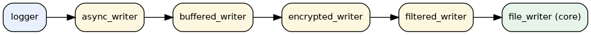

- Generated by
 1.12.0
1.12.0
|
Logger System 0.1.3
High-performance C++20 thread-safe logging system with asynchronous capabilities
|
logger_system uses the Decorator pattern to layer cross-cutting concerns (filtering, buffering, encryption, asynchrony) on top of a small set of core writers. This tutorial explains how the decorators interact, what order to apply them in, and how to plug in your own.
A "writer chain" is a single log_writer_interface* whose write() call invokes an inner writer, optionally transforming the entry along the way.

Each layer is a decorator_writer_base subclass that owns a std::unique_ptr<log_writer_interface> and forwards write() after applying its concern. The chain is built from the outside in: when you write writer_builder().file("a.log").filtered(f).encrypted(k).buffered(500).async() the file writer ends up at the bottom of the chain and async_writer becomes the outermost wrapper.
The order in which decorators run matters. Following the recommended order yields predictable performance and security guarantees:
| Position (outermost first) | Decorator | Why |
|---|---|---|
| 1 | async_writer | Off-loads I/O to a worker thread; should be the first thing the calling thread sees so it returns immediately. |
| 2 | thread_safe_writer | If you need an explicit mutex around a non-thread-safe inner writer, place it just inside the async layer. (Most core writers are already thread-safe.) |
| 3 | buffered_writer / batch_writer | Aggregates entries to amortize syscalls. Must be inside the async layer or the worker thread will fight the buffer. |
| 4 | encrypted_writer | Operates on the bytes that will be persisted, so it should run after buffering (more data = better cipher block utilization) but before any post-processing. |
| 5 | filtered_writer | Drops entries based on level/content. Cheap, can sit anywhere, but placing it close to the core writer avoids paying for filtering on suppressed entries when an outer transformation is expensive. |
| 6 | formatted_writer | Converts the structured entry to its on-wire representation. Must be the layer immediately above the core writer if you want bytes-on-disk control. |
| 7 (core) | console_writer, file_writer, rotating_file_writer, network_writer, otlp_writer, composite_writer | The leaf that performs the real I/O. |
async_writer inside buffered_writer is almost always wrong: the buffer will be flushed by the calling thread instead of the background worker, defeating the purpose of asynchrony.The fluent builder applies decorators in the order you call them, with the first call producing the innermost (core) writer. This means the order in your code reads naturally from "what data lives where" outward to "how should it be delivered":
After build(), the resulting std::unique_ptr<log_writer_interface> is ready to be handed to logger::add_writer() or logger_builder::add_writer().
Sensitive audit logs that must be encrypted at rest, buffered for throughput, and written asynchronously so request handlers are not blocked.
Send everything to a rotating file, but only show warnings and errors on the console so the operator's terminal stays readable.
Implementing your own decorator is a matter of inheriting from decorator_writer_base, forwarding write(), and overriding get_name(). The example below tags every entry with a static service name.
If your decorator needs configuration plumbing or builder support you can also expose it through writer_builder::with_decorator(std::function<...>) so the fluent chain stays uniform with the built-in layers. See decorator_usage.cpp for a complete walkthrough including filtering and encryption variants.
async_writer requires start() before any write() call. logger::start() propagates to writers added through add_writer(). If you build a chain manually, call dynamic_cast<async_writer*>(chain.get())->start().stop() returns the worker thread is gone. Subsequent write() calls return an error result.async_writer per chain is supported. Wrap the async layer with another decorator if you need post-processing on the worker thread.